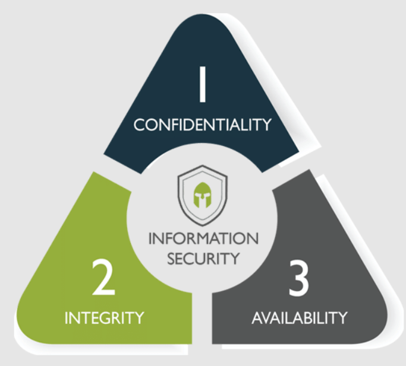

|
Cybersecurity, also known as digital security, is the practice of protecting your
digital information, devices, and assets.
This includes your personal information, accounts, files, photos and even money.
|
|
CIA
The acronym "CIA" is often used to represent the three pillars of
cybersecurity.

Privacy - Keeping your secrets and ensuring that only authorized people can
access
your files and
accounts.
Integrity - Ensuring that your information is as it should be and that no one
adds, changes or deletes anything without your permission. For example, maliciously
changing numbers
in a spreadsheet.
Access - To provide you with access to your information and systems when you
need
them. An example
of an access problem is a denial of service attack, where attackers flood your
system with network
traffic to make it nearly impossible to access; or ransomware that encrypts your
system and prevents
you from using it.
|
|
Security is a process, not a product!
While security apps and devices like anti-malware software and firewalls are
necessary, it's not
enough to just plug these tools in and call them good. Digital security also
requires the
implementation of a set of thoughtful processes and practices.
These include:
Data backups - Important data should be stored in a safe place and you should
be
able to restore a
good, tested copy of that data in case something bad happens to the file.
Good cyber habits - Do not open unexpected links or attachments that you may
receive
in email or
text, even if they appear to be from a trusted sender.
Keeping your software up-to-date – Operating systems like Windows, MacOS, iOS
or
Android, as well as
apps and browsers should be kept up to date with the latest patches and fixes from
the manufacturer.
Use strong, unique, and passwords - Good passwords should be at least 14
characters
long, have
English words, and should not be reused across multiple accounts.
Use Multi-Factor Authentication - Whenever possible, enable multi-factor
authentication to keep your
accounts more secure, both at home and at work.
Lock your devices - Make sure your devices require a password, PIN, or
biometric
authentication such
as fingerprint or facial recognition to log in. Lost or stolen devices can be a
goldmine for
criminals if they can easily access data from an unlocked device.
|
|
What are the types of attacks that cybersecurity attempts to defend?
Cybersecurity professionals strive to contain and mitigate existing and new threats
that
infiltrate computer systems in different ways. We give some examples of common cyber
threats
below.
Malware:
Malware stands for malicious software. It includes a range of software programs
built to allow
third parties to gain unauthorized access to sensitive information or to interrupt
the normal
working of a critical infrastructure. Common examples of malware include Trojans,
spyware, and
viruses.
Ransomware:
Ransomware refers to a business model and a wide range of associated technologies
that bad
actors use to extort money from entities. Whether you’re just getting started or
already
building on AWS, we have resources dedicated to help you protect your critical
systems and
sensitive data against ransomware.
Man-in-the-middle attack:
A man-in-the-middle attack involves an outside party attempting unauthorized access
over a
network during a data exchange. Such attacks increase the security risks of
sensitive
information such as financial data.
Phishing:
Phishing is a cyber threat that uses social engineering techniques to trick users
into revealing
personally identifiable information. For example, cyber attackers send emails that
result in
users clicking and entering credit card data on a fake payment webpage. Phishing
attacks can
also result in the downloading of malicious attachments which install malware on
company
devices.
DDoS:
A distributed denial of service attack (DDoS) is a coordinated effort to overwhelm a
server by
sending a high volume of fake requests. Such events prevent normal users from
connecting or
accessing the targeted server.
Insider threat:
An insider threat is a security risk introduced by personnel with ill intentions
within an
organization. The personnel possess high-level access to the computer systems and
could
destabilize the infrastructure's security from within.
|
|
The Top Skills Required for Cybersecurity Jobs
Problem-Solving Skills:
As a cybersecurity professional, problem-solving will play a major role in your
day-to-day work.
Those in the field need to find creative ways to take on and address complex
information
security challenges across a variety of existing and emerging technologies and
digital
environments.
Technical Aptitude:
As the name implies, cybersecurity is a technology-focused field: you will be likely
be tasked
with responsibilities such as troubleshooting, maintaining, and updating information
security
systems; implementing continuous network monitoring; and providing real-time
security solutions.
Being technologically savvy is essential in order to perform the daily activities of
a
cybersecurity professional.
Knowledge of Security Across Various Platforms:
Cybersecurity isn't just limited to computers: you'll need to be comfortable working
on a
variety of operating systems, computer systems, mobile devices, cloud networks, and
wireless
networks - and keep up to date on advances in the field for all of them.
Attention to Detail:
Being able to defend an organization against cyber breaches requires you to be
highly vigilant
and detail-oriented, in order to effectively detect vulnerabilities and risks.
You'll like be
responsible for continuous network monitoring and will need to be able to quickly
identify
concerns and come up with real-time security solutions to address them.
Communication Skills:
As a cybersecurity specialist, you'll be working closely with individuals in other
roles and
departments, and it's important to be able to effectively communicate and explain
your findings,
concerns, and solutions to others. It's important to be able to speak clearly and
concisely on
cybersecurity strategy and policy, as well as to be able to convey technical
information to
individuals of different levels of technical comprehension.
Fundamental Computer Forensics Skills:
While computer forensics and cybersecurity are two separate fields, they're closely
related -
and having a foundation in computer forensics can help you excel in your
cybersecurity career.
To be able to effectively protect organizations' digital assets and prevent security
breaches,
you'll need to have a solid understanding of what happens if your efforts fail, and
how
compromised data is recovered. Most cybersecurity degree programs will have a
computer forensics
component for this reason.
A Desire to Learn:
As with any technical field, cybersecurity is fast-changing. Anyone who works in the
field will
need to be committed to keeping current with best practices and emerging industry
trends, and
will always need to be learning and self-educating - both on and off the
clock.
An Understanding of Hacking:
To effectively protect an organization's network and infrastructure, you'll need to
know how
they can be exploited in the first place - that's why most cybersecurity
professionals must
learn how to "ethically hack." Essentially, you need to have the same skills as a
hacker, to
fully understand how a system could be breached, and in turn, create effective
solutions for
thwarting these attacks.
|
|
What Does a Cybersecurity Professional Do?
Cybersecurity professionals are trained to find weaknesses in databases, networks,
hardware,
firewalls, and encryption. The number one priority of a cybersecurity professional
is to prevent
attacks by ‘fixing’ potential issues before they are exploited by malicious users.
Additionally,
cybersecurity specialists will handle clean up after cyber-attacks and security
breaches.
Broad research areas:
1. Information Security
1. Computer Network Security
2. Application Security
3. Web Services Security
4. Mobile Security
5. Protective Security
6. Software Security
7. Wireless & Sensor Network Security
8. Software Coding Security
9. Data Capturing devices and Security
10. Security in Middleware, Interface and Interaction
11. Security Services in Authentication, Authorisation, Accountability, Automation,
Availability, Integrity and Non-repudiation
12. Security Management
13. Security Operations
14. Digital Trust and Reputation
15. Spatial Location (Geo-location) and Cyber Travel
16. spatial Intelligence Networks (Centralised, Distributed & Hybrid)
17. Policy, Legal, Legislation & Compliance
18. Security Standardisation
19. Law, Legal and Ethical issues
Digital Services:
1. Web Services, Internet Banking, E-Booking
2. E-Government, Electronic Commerce
3. Citizens Public Online Services
4. Mobile Commerce
5. E-Postal Services, E-Health, E-Learning and Online & Virtual Education
6. Secure Protocols, Coding and Development
7. Security Principles, Theory and Analysis
8. Security Policy, Standards and Procedures
9. Security in Business Processes
10. Security Enforcing Function (SEF) Gateways
11. Intrusion Detection Systems
12. Intrusion Prevention Systems
13. Firewalls & Spam identification and protection
14. Anti-Virus and Anti-Malware Gateways
15. Data Loss Prevention and Encryption Services
Protection of Digital Services:
1. Protection of Business Information Systems
2. Protection of Online Services
3. Public Online Services
4. Internet Banking
5. Security, Trust, Privacy
6. Security in Online Gaming Systems
7. Security in e-Government and Electoral Systems
8. Content Security
9. Protection of Public Online Content Distribution Systems
10. Secure practices, processes and procedures in Public Online Services
11. Cryptography -PKI, HSMs, Symmetric and Asymmetric Crypto, Crypto Custodian &
Crypto Standards and Practices
12. Digital Forensics and Investigations
13. HoneyPots and Honey Nets
14. National Information Infrastructure (NII) protection
15. National Critical Infrastructures (NCI) protection
16. Critical Network Systems (CNS)
|